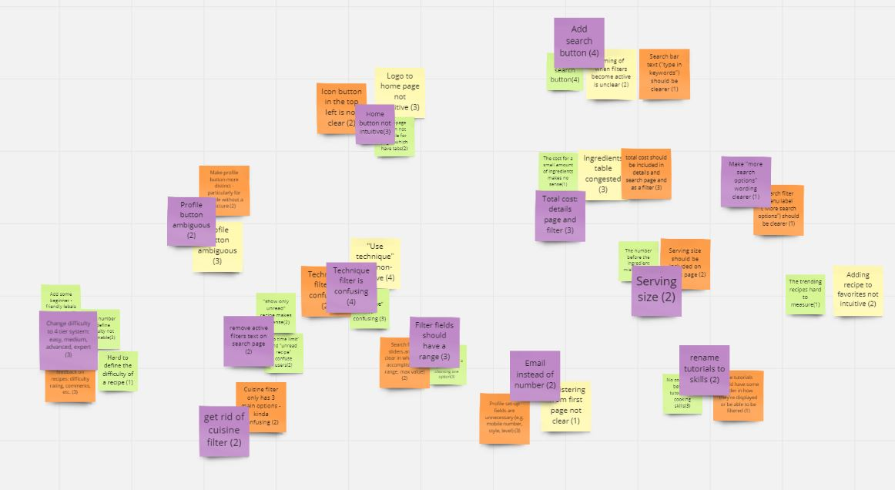

Overview

Nowadays, the world is experiencing an unprecedented pandemic.
People used to go outside for eating, but now the ways to get
food are much different. However, it is difficult for many people
to cook food at the same caliber as restaurant cuisine because of
their lack of experience. Our team aims to design a system that
can guide people to be a better cook, and can provide support
for staying-at-home people a way to ease into cooking.
“We want to design a system that helps people ease into cooking”
Existing Products
Description: Users order food through a phone app.
User base: Anyone with a phone looking to acquire food without leaving their doorstep.
Approach: Don’t teach users how to cook. Instead, make the process of acquiring food painless and easily accessible.
Description: Video sharing website. Many users post cooking tutorials and videos that other users can view.
User base: Anyone looking for cooking tutorials that prefer a video medium.
Approach: Users search for available cooking tutorials with keywords.
Description: Websites that offer massive amounts of recipes.
User base: People who are looking for recipes online.
Approach: Users can search from a bank of recipes. These systems also have a rating system for users to gauge trustworthiness
Evaluation
Section 1: User Evaluation
Methods
For the user evaluation, the three team members each interviewed two potential users for a total of six user evaluation interviews. These interviews were conducted with a guildeline in mind, constructed by the team members prior. After we individually collected the interview results, we then used Miro, a virtual whiteboard, to collect and organize the notes obtained from said interviews. We then constructed a table listing the issues found ordered by priority, and updated our existing wireframe accordingly.
 The user evaluation guideline the team followed. Includes a list of questions and tasks the participants were encouraged to answer and complete.
The user evaluation guideline the team followed. Includes a list of questions and tasks the participants were encouraged to answer and complete.

The whiteboard activity conducted in Miro. The yellow, orange, and green sticky notes were the individual notes found in the interviews. The purple sticky notes represent a issue that a group of individual sticky notes highlight.
Findings
In total, the team formulated 13 key issues from the user evaluations. Most of the concerns stemmed from ambiguous wording and interactables in the system, which the team prioritized in reflecting in the wireframe. For example, the "Tutorials" tab was renamed to "Skills" due to the confusions stemming from the terminology. Other user confusions involved displaying unneccessary information, such as displaying active filters and allowing insignificant filters, therefore cluttering the filter window.
One example of a significant change based on user evaluations. We previously implemented a numeric scale of difficulty. However, based on user feedback, we overhauled the numeric scale for a four-tier system, which seems to be more intutivie for users.
 Another example of significant changed based on user evaluations. We originally had an approximate pricing for individual ingredients. After user feedback, we decided to display an approximate total cost instead.
Another example of significant changed based on user evaluations. We originally had an approximate pricing for individual ingredients. After user feedback, we decided to display an approximate total cost instead.
Section 2: Heuristic Evaluation
Methods
For the heuristic evaluation, we individually evaluated the high-fidelity version of Apron we constructed prior. This process involved focusing on focusing on one of Hielsen's 10 Heuristics, uncovering components of the system that seemingly violate the heuristic, documenting it, and repeating for all ten heuristics. Then, similar to the user evaluations, the group collected the usability issues on Miro, and constructed a table listing the issues found ordered by priority, and updated our high fidelity mockup accordingly.
Findings
Surprisingly, many of the issues found from the individual heuristic evaluation did not match the others. There were about 60 usability issues found through this exercise. However, due to limitations of Figma, the platform this high fidelity mockup was constructed on, some of these usability issues were unreasonable to resolve. In total, the team formulated 19 key issues from the heuristic evaluation that were reflected in the final high fidelity mockup.
 One example of a significant change based on heuristic evaluations. We previously ommitted price and calories, while displaying the difficulty and time limit of recipes. This design was inherently inconsistent, so we included the price and calorie count in the recipe entry.
One example of a significant change based on heuristic evaluations. We previously ommitted price and calories, while displaying the difficulty and time limit of recipes. This design was inherently inconsistent, so we included the price and calorie count in the recipe entry.
 Another example of significant changed based on heuristic evaluations. There were previously no feedback to the user when they would add recipes to their favorites. With this new popup, the user receives visual feedback for their action of adding to favorites.
Another example of significant changed based on heuristic evaluations. There were previously no feedback to the user when they would add recipes to their favorites. With this new popup, the user receives visual feedback for their action of adding to favorites.
Final Design
Home Page
The home page of Apron. The top and recommended recipes are tailored towards the user's difficulty and style preferences. Additionally, for the trend chasers out there, hottest recipes will appear under the trending recipes.
Search Page
The search tab of Apron. The user is met with a longer list of recommended recipes when they first navigate to this tab. Each recipe entry features a thumbnail, short description, calories, price, time, and difficulty of the recipe.
Filters
The filters available in Apron. Users are able to filter recipes by difficulty, time limit, calories, and total cost. There is also a "Show only unread recipes" toggle for our adventurous users.
Recipe Details
The recipe details. In every recipe, there will be a big picture of the dish at the top, followed by calories, time, serving size, and cost. Further below are the ingredients and instructions. Users can submit feedback through the comment system at the bottom of the page.
Skills
The skills tab. This tab features a library of techniques that beginner cooks may not know, such as how to preheat and oven or how to use a pressure cooker.